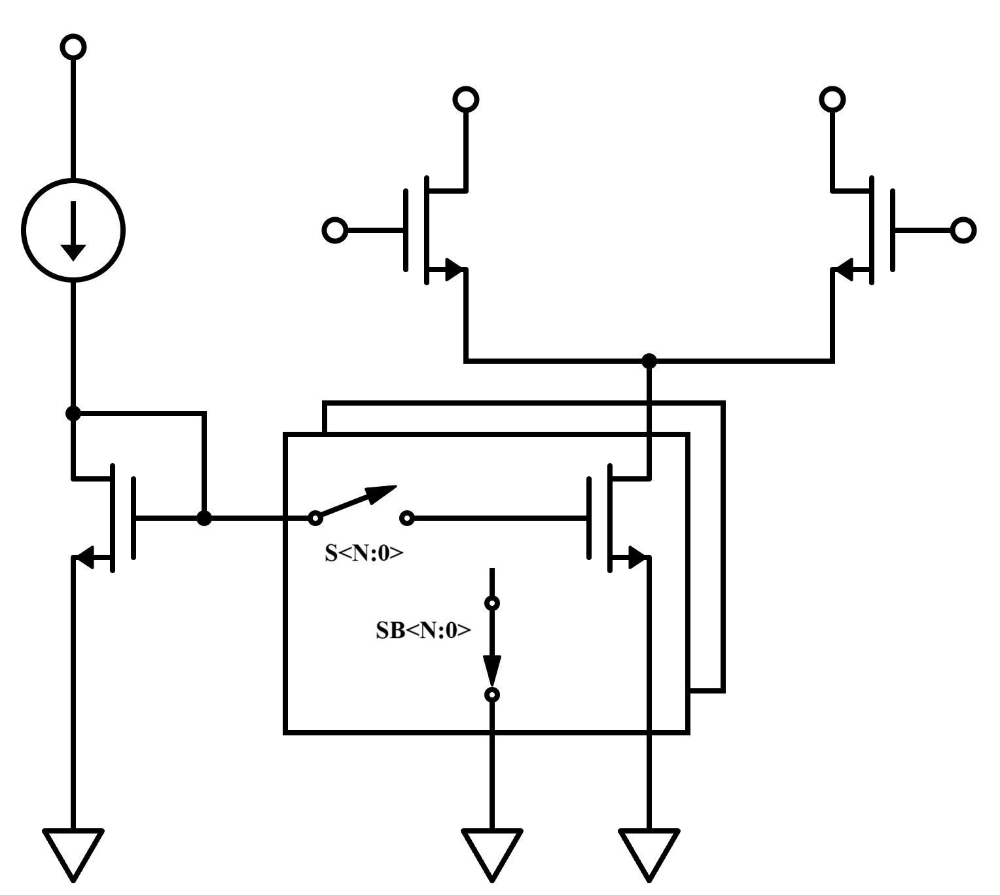
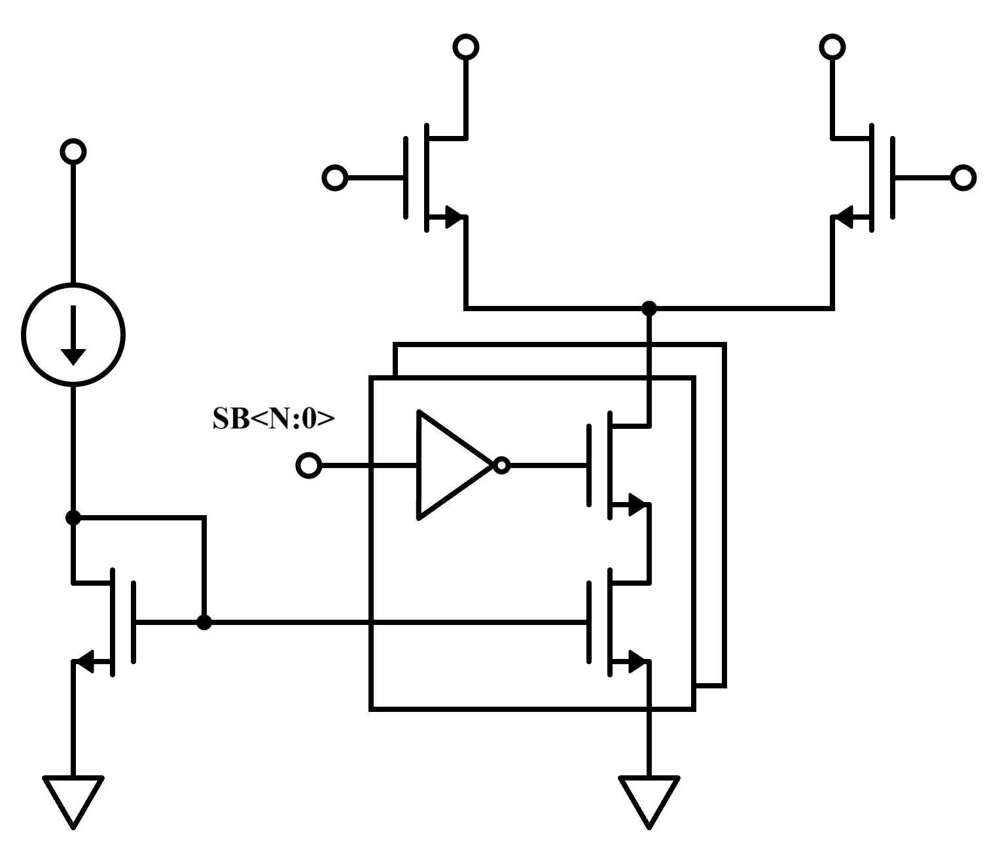

Fig. 1. Classic Tail Current Calibration Structure
如 Fig. 1. 所示，這是一個典型的 Tail Current Calibration 架構，透過將 NMOS 的 Gate 斷開並短接到地，可以將該 Tail Current 關閉，反之則可以將其打開，此架構在 Foreground Calibration 沒有太大的問題，但若使用在 Background Calibration 則會有 Glitch 產生。
通常控制開關 S < N:0 > 與 SB < N:0 > 的訊號由數位端提供，而反向訊號則由一個 inverter 實作，不論 inverter 是將 S < N:0 > 反轉成 SB < N:0 > ，抑或是將 SB < N:0 > 反轉成 S < N:0 > ，由於 inverter 的速度不是無限快的，勢必有一個控制訊號為另一個訊號的延遲，這使得當進行 Background Calibration 的時候，若有前後跳 code 的情況發生，則會有將全體 Current Mirror Gate 端短接到地的可能，進而導致 Tail Current 有一瞬間被全部關掉。
 Fig. 2. Background Calibration Structure另一種常見的做法如 Fig. 2. 所示，這種做法可以保證在切 code 的時候不會將其餘的電流源關閉，但會有 Headroom 的問題，Switch 在導通的時候需要流一個檔位大小的電流，因此通常需要夠大的 Size 以確保底下的 Tail Current 操作在 Saturation Region。
此外，若使用二進位的檔位切換，也會有 Glitch 產生，實作上採用 Gray to Thermal Decoder，並使用 Thermometer Code 控制開關可以確保沒有 Glitch。